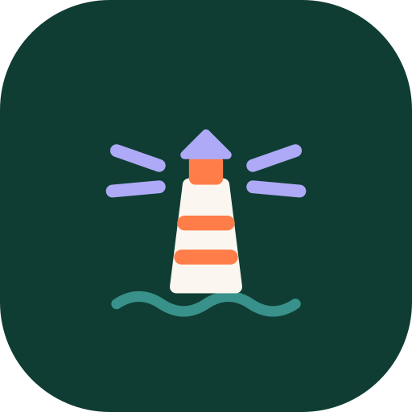
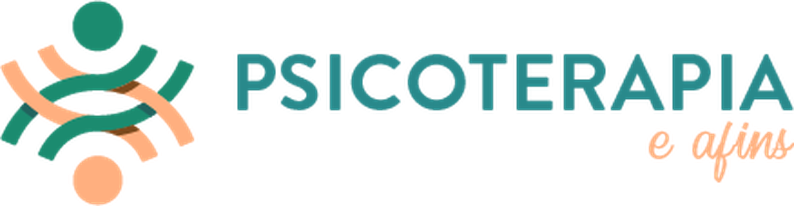
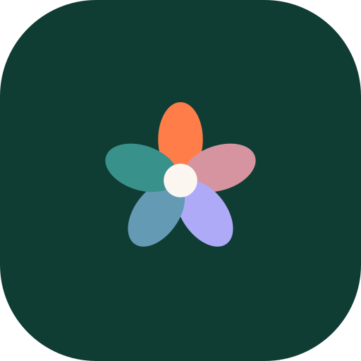
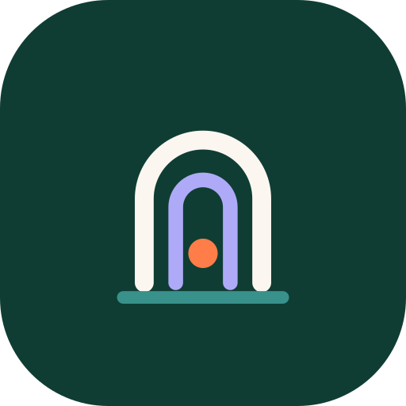
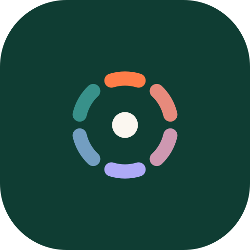
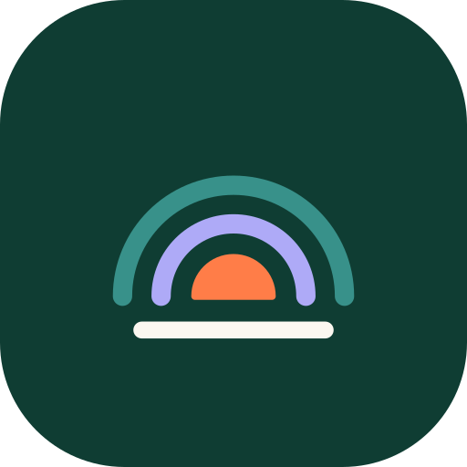
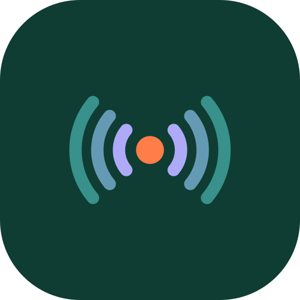
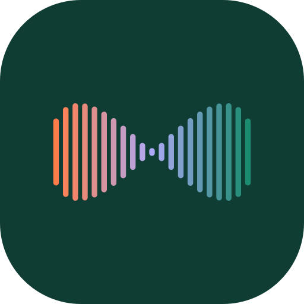
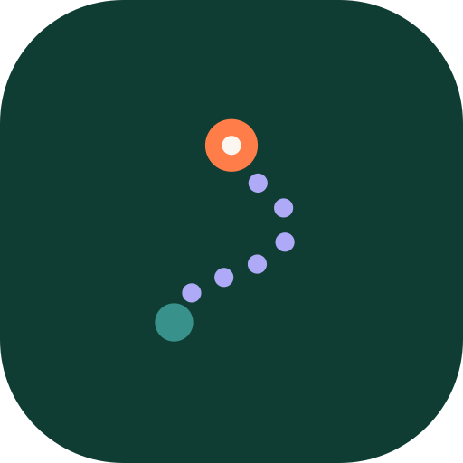

Farol
Para quem se preocupa demais.
Oito módulos sobre a relação com as preocupações, com técnicas de TCC, ACT, mindfulness e compaixão.
Abrir o Farol
psicoterapiaeafins.com.brProgramas psicoeducativos para fazer no seu ritmo, no celular ou no computador.

Para quem se preocupa demais.
Oito módulos sobre a relação com as preocupações, com técnicas de TCC, ACT, mindfulness e compaixão.
Abrir o Farol
Cultivando emoções positivas.
Oito módulos de psicologia positiva e compaixão, mais um laboratório para testar crenças que bloqueiam o prazer.
Abrir o Floresça
Reconstruindo a sensação de segurança.
Percurso em cinco etapas para regular o corpo, organizar o que aconteceu e recuperar a segurança interna.
Abrir o Segurança Interna
Cada sentimento tem seu tom.
Recurso para reconhecer e nomear as seis emoções básicas, pensado também para pessoas com alexitimia ou neurodivergentes.
Abrir o Matiz
Um passo de cada vez, no seu ritmo.
Ativação comportamental com pequenas atividades planejadas, humor e diário.
Abrir a Aurora
Escolher para onde levar a atenção.
Treino de atenção com sons ambientes, guiado em três fases, para praticar entre sessões.
Abrir a Sintonia
Apoio no seu ritmo.
Para adultos neurodivergentes: tarefas em micro-passos, rotinas visuais, regulação sensorial e plano de apoio, sem metas nem cobrança. Os dados ficam no aparelho; a conta é opcional.
Abrir o Ritmo
Apoio entre as sessões de terapia.
Para adolescentes em acompanhamento online: práticas, registros e orientações para fazer entre as sessões. Acesso somente por convite da psicóloga.
Acesso somente por convite